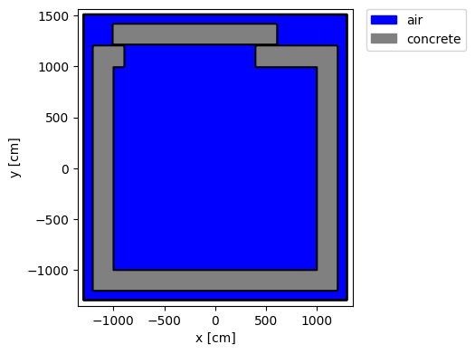
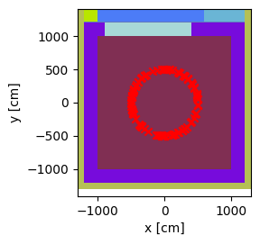
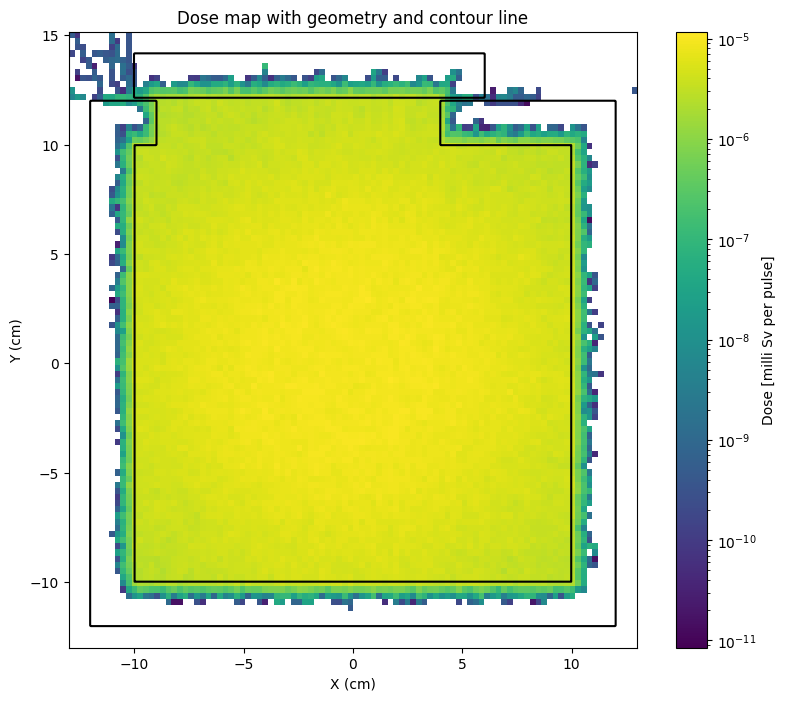

Dose map from neutron pulse#
This task simulates dose from a pulse of neutrons on a regular mesh.
The regular mesh values are then used to create a dose map showing dose limits
import matplotlib.pyplot as plt
from matplotlib.colors import LogNorm
import numpy as np
import openmc
from pathlib import Path
# Setting the cross section path to the correct location in the docker image.
# If you are running this outside the docker image you will have to change this path to your local cross section path.
openmc.config['cross_sections'] = Path.home() / 'nuclear_data' / 'cross_sections.xml'
We define the materials used in the simulation, just simple air and concrete.
mat_air = openmc.Material(name="air")
mat_air.add_element("N", 0.784431)
mat_air.add_element("O", 0.210748)
mat_air.add_element("Ar", 0.0046)
mat_air.set_density("g/cc", 0.001205)
mat_concrete = openmc.Material(name='concrete')
mat_concrete.add_element("H",0.168759)
mat_concrete.add_element("C",0.001416)
mat_concrete.add_element("O",0.562524)
mat_concrete.add_element("Na",0.011838)
mat_concrete.add_element("Mg",0.0014)
mat_concrete.add_element("Al",0.021354)
mat_concrete.add_element("Si",0.204115)
mat_concrete.add_element("K",0.005656)
mat_concrete.add_element("Ca",0.018674)
mat_concrete.add_element("Fe",0.00426)
mat_concrete.set_density("g/cm3", 2.3)
my_materials = openmc.Materials([mat_air, mat_concrete])
Next we define some parameters that will be used for the bio shield construction
floor_thickness = 200
wall_thickness = 200
ceiling_thickness = 150
inner_cell_y_width = 2000
inner_cell_x_width = 2000
inner_cell_height = 1000
door_to_wall_gap = 16
door_thickness = 200
door_way_left_offset = 100
door_way_length = 400
door_overlap = 100
door_left_offset = door_way_left_offset - door_overlap
door_length = door_way_length + door_overlap * 2
padding = 100
Then we define the geometry, which is just a shielded room with a sliding overlapping door. The geometry is a bit excessive for this example so don’t focus on the details of this geometry, I just wanted to add something representative.
lower_floor = openmc.ZPlane(z0=0)
upper_floor = openmc.ZPlane(z0=floor_thickness)
lower_ceiling = openmc.ZPlane(z0=upper_floor.z0+inner_cell_height)
upper_ceiling = openmc.ZPlane(z0=lower_ceiling.z0+ceiling_thickness)
left_wall_inner_wall = openmc.XPlane(x0=-(inner_cell_x_width/2))
right_wall_inner_wall = openmc.XPlane(x0=inner_cell_x_width/2)
left_wall_outer_wall = openmc.XPlane(x0=left_wall_inner_wall.x0-wall_thickness)
right_wall_outer_wall = openmc.XPlane(x0=right_wall_inner_wall.x0+wall_thickness)
lower_wall_inner_wall = openmc.YPlane(y0=-(inner_cell_y_width/2))
lower_wall_outer_wall = openmc.YPlane(y0=lower_wall_inner_wall.y0 - wall_thickness)
top_wall_inner_wall = openmc.YPlane(y0=inner_cell_y_width/2)
top_wall_outer_wall = openmc.YPlane(y0=top_wall_inner_wall.y0+wall_thickness)
door_inner_wall = openmc.YPlane(y0=top_wall_outer_wall.y0+door_to_wall_gap)
door_outer_wall = openmc.YPlane(y0=door_inner_wall.y0+door_thickness)
door_left = openmc.XPlane(x0=left_wall_inner_wall.x0+door_left_offset)
door_right = openmc.XPlane(x0=door_length)
doorway_left = openmc.XPlane(x0=left_wall_inner_wall.x0+door_way_left_offset)
doorway_right = openmc.XPlane(x0=door_way_length)
door_region = -door_outer_wall & +door_inner_wall & +door_left &-door_right & +upper_floor &-upper_ceiling
left_of_door_region = +left_wall_outer_wall & -door_outer_wall & +door_inner_wall & -door_left & +upper_floor &-upper_ceiling
right_of_door_region = -right_wall_outer_wall & -door_outer_wall & +door_inner_wall & +door_right & +upper_floor &-upper_ceiling
left_wall_region = +left_wall_outer_wall & -left_wall_inner_wall & -top_wall_inner_wall & +lower_wall_inner_wall & -lower_ceiling & +upper_floor
right_wall_region = -right_wall_outer_wall & +right_wall_inner_wall & -top_wall_inner_wall & +lower_wall_inner_wall & -lower_ceiling & +upper_floor
top_left_wall_region = -top_wall_outer_wall & +top_wall_inner_wall & +left_wall_outer_wall & -doorway_left & -lower_ceiling & +upper_floor
top_right_wall_region = -top_wall_outer_wall & +top_wall_inner_wall & +doorway_right & -right_wall_outer_wall & -lower_ceiling & +upper_floor
door_way_region = -top_wall_outer_wall & +top_wall_inner_wall & -doorway_right & +doorway_left & -lower_ceiling & +upper_floor
lower_wall_region = +lower_wall_outer_wall & -lower_wall_inner_wall & +left_wall_outer_wall & -right_wall_outer_wall & -lower_ceiling & +upper_floor
inner_region = +left_wall_inner_wall & -right_wall_inner_wall & -top_wall_inner_wall & +lower_wall_inner_wall & -lower_ceiling & +upper_floor
floor_region = -upper_floor & +lower_floor & +left_wall_outer_wall & -right_wall_outer_wall & -top_wall_outer_wall & +lower_wall_outer_wall
floor_region_below_door_gap = -upper_floor & +lower_floor & -door_outer_wall & +top_wall_outer_wall & +left_wall_outer_wall & -right_wall_outer_wall
air_region_in_door_gap = -upper_ceiling & +upper_floor & -door_inner_wall & +top_wall_outer_wall & +left_wall_outer_wall & -right_wall_outer_wall
ceiling_region = -upper_ceiling & +lower_ceiling & +left_wall_outer_wall & -right_wall_outer_wall & -top_wall_outer_wall & +lower_wall_outer_wall
outer_box = openmc.model.RectangularParallelepiped(
xmin=left_wall_outer_wall.x0-padding,
xmax=right_wall_outer_wall.x0+padding,
ymin=lower_wall_outer_wall.y0-padding,
ymax=door_outer_wall.y0+padding,
zmin=lower_floor.z0-padding,
zmax=upper_ceiling.z0+padding,
boundary_type='vacuum'
)
outer_box_inner_surface = openmc.model.RectangularParallelepiped(
xmin=left_wall_outer_wall.x0,
xmax=right_wall_outer_wall.x0,
ymin=lower_wall_outer_wall.y0,
ymax=door_outer_wall.y0,
zmin=lower_floor.z0,
zmax=upper_ceiling.z0
)
padding_cell = openmc.Cell(name='padding_cell', region=-outer_box & +outer_box_inner_surface, fill=mat_air)
wall_cell = openmc.Cell(name='wall_cell', region = lower_wall_region | right_wall_region | top_left_wall_region | top_right_wall_region | left_wall_region, fill = mat_concrete)
floor_cell = openmc.Cell(name='floor', region = floor_region, fill = mat_concrete)
floor_cell_2 = openmc.Cell(name='floor', region = floor_region_below_door_gap, fill = mat_concrete)
ceiling_cell = openmc.Cell(name='ceiling', region = ceiling_region, fill = mat_concrete)
inner_cell = openmc.Cell(name='inner_cell', region=inner_region, fill = mat_air)
inner_cell_top = openmc.Cell(name='inner_cell_top', region=door_way_region, fill = mat_air)
air_region_in_door_gap_cell = openmc.Cell(name='air_region_in_door_gap', region=air_region_in_door_gap, fill = mat_air)
air_region_left_of_door_cell = openmc.Cell(name='left_of_door_region', region=left_of_door_region, fill = mat_air)
air_region_right_of_door_cell = openmc.Cell(name='right_of_door_region', region=right_of_door_region, fill = mat_air)
door_cell = openmc.Cell(name="door", fill=mat_concrete, region=door_region)
my_geometry = openmc.Geometry([wall_cell, padding_cell, inner_cell, floor_cell, floor_cell_2, ceiling_cell, inner_cell_top, door_cell, air_region_in_door_gap_cell, air_region_left_of_door_cell, air_region_right_of_door_cell, ])
my_geometry.plot(
basis='xy',
origin=my_geometry.bounding_box.center,
width=(my_geometry.bounding_box.width[0]+100, my_geometry.bounding_box.width[1]+100),
outline=True,
legend=True,
color_by='material',
colors={
mat_air: 'blue',
mat_concrete: 'gray',
},
pixels=1_000_00
)
plt.show()

Now we define the neutron source term, I’ve opted for a ring source instead of a point source as this will provide different incident angles on the gaps between the door and the wall of the room.
source = openmc.IndependentSource()
radius = openmc.stats.Discrete([500], [1])
# the distribution of source z values is just a single value
height_of_source = 300
z_values = openmc.stats.Discrete([height_of_source], [1])
# the distribution of source azimuthal angles values is a uniform distribution between 0 and 2 Pi
angle = openmc.stats.Uniform(a=0., b=2* 3.14159265359)
# this makes the ring source using the three distributions and a radius
source.space = openmc.stats.CylindricalIndependent(r=radius, phi=angle, z=z_values, origin=(0.0, 0.0, 0.0))
# sets the direction to isotropic
source.angle = openmc.stats.Isotropic()
# sets the energy distribution to a Muir distribution neutrons
source.energy = openmc.stats.muir(e0=14080000.0, m_rat=5.0, kt=20000.0)
Instantiate a Settings object
my_settings = openmc.Settings(
batches = 10,
particles = 50000,
run_mode = "fixed source",
source = source,
)
# when running a mesh tally simulation you might want to tell openmc not to save
# the tallies.out file which is a ASCII file containing the tally results.
# for mesh tallies this can get very large and take a long time to write.
# the statepoint.h5 is smaller and quicker as it is a binary file
my_settings.output = {"tallies": False}
Add the neutron dose tally on the regular mesh
# these are the dose coefficients coded into openmc
# originally from ICRP https://journals.sagepub.com/doi/10.1016/j.icrp.2011.10.001
energy_bins_n, dose_coeffs_n = openmc.data.dose_coefficients(
particle="neutron",
geometry="ISO", # we are using the ISO direction as this is a dose field with dose
)
energy_function_filter_n = openmc.EnergyFunctionFilter(
energy=energy_bins_n,
y=dose_coeffs_n,
interpolation="cubic" ) # cubic interpolation is recommended by ICRP
# just getting the dose for neutrons, not photons or other particles
neutron_particle_filter = openmc.ParticleFilter("neutron")
# mesh has high resultion in X and Y as that is the orientation used for the plot
mesh = openmc.RegularMesh().from_domain(my_geometry, dimension=(100, 100, 30))
mesh_filter = openmc.MeshFilter(mesh)
# Create tally to score dose
dose_cell_tally = openmc.Tally(name="neutron_dose_on_mesh")
# note that the EnergyFunctionFilter is included as a filter
dose_cell_tally.filters = [
mesh_filter,
neutron_particle_filter,
energy_function_filter_n,
]
dose_cell_tally.scores = ["flux"]
my_tallies = openmc.Tallies([dose_cell_tally])
Now we combine geometry, settings (including the source), materials and tallies into a model
We plot the model with the source just to check the source is where we expected
model = openmc.Model(my_geometry, my_materials, my_settings, my_tallies)
# this puts the plot slice at the center of the geometry at the height of the source
origin = (model.bounding_box.center[0], model.bounding_box.center[0], height_of_source)
# plots 100 source samples on the figure
model.plot(n_samples=100, origin=origin, source_kwargs={"color":"red"})
<Axes: xlabel='x [cm]', ylabel='y [cm]'>

Now we run the simulation
statepoint_filename = model.run()
%%%%%%%%%%%%%%%
%%%%%%%%%%%%%%%%%%%%%%%%
%%%%%%%%%%%%%%%%%%%%%%%%%%%%%%
%%%%%%%%%%%%%%%%%%%%%%%%%%%%%%%%%%
%%%%%%%%%%%%%%%%%%%%%%%%%%%%%%%%%%%%%%
%%%%%%%%%%%%%%%%%%%%%%%%%%%%%%%%%%%%%%%%
%%%%%%%%%%%%%%%%%%%%%%%%
%%%%%%%%%%%%%%%%%%%%%%%%
############### %%%%%%%%%%%%%%%%%%%%%%%%
################## %%%%%%%%%%%%%%%%%%%%%%%
################### %%%%%%%%%%%%%%%%%%%%%%%
#################### %%%%%%%%%%%%%%%%%%%%%%
##################### %%%%%%%%%%%%%%%%%%%%%
###################### %%%%%%%%%%%%%%%%%%%%
####################### %%%%%%%%%%%%%%%%%%
####################### %%%%%%%%%%%%%%%%%
###################### %%%%%%%%%%%%%%%%%
#################### %%%%%%%%%%%%%%%%%
################# %%%%%%%%%%%%%%%%%
############### %%%%%%%%%%%%%%%%
############ %%%%%%%%%%%%%%%
######## %%%%%%%%%%%%%%
%%%%%%%%%%%
| The OpenMC Monte Carlo Code
Copyright | 2011-2025 MIT, UChicago Argonne LLC, and contributors
License | https://docs.openmc.org/en/latest/license.html
Version | 0.15.3-dev183
Commit Hash | 08fd19daaaaee3a874eae765939c39e58cd459e1
Date/Time | 2025-06-16 10:59:24
OpenMP Threads | 16
Reading model XML file 'model.xml' ...
Reading cross sections XML file...
Reading N14 from /home/jon/nuclear_data/neutron/N14.h5
Reading N15 from /home/jon/nuclear_data/neutron/N15.h5
Reading O16 from /home/jon/nuclear_data/neutron/O16.h5
Reading O17 from /home/jon/nuclear_data/neutron/O17.h5
Reading O18 from /home/jon/nuclear_data/neutron/O18.h5
Reading Ar36 from /home/jon/nuclear_data/neutron/Ar36.h5
WARNING: Negative value(s) found on probability table for nuclide Ar36 at 294K
Reading Ar38 from /home/jon/nuclear_data/neutron/Ar38.h5
Reading Ar40 from /home/jon/nuclear_data/neutron/Ar40.h5
Reading H1 from /home/jon/nuclear_data/neutron/H1.h5
Reading H2 from /home/jon/nuclear_data/neutron/H2.h5
Reading C12 from /home/jon/nuclear_data/neutron/C12.h5
Reading C13 from /home/jon/nuclear_data/neutron/C13.h5
Reading Na23 from /home/jon/nuclear_data/neutron/Na23.h5
Reading Mg24 from /home/jon/nuclear_data/neutron/Mg24.h5
Reading Mg25 from /home/jon/nuclear_data/neutron/Mg25.h5
Reading Mg26 from /home/jon/nuclear_data/neutron/Mg26.h5
Reading Al27 from /home/jon/nuclear_data/neutron/Al27.h5
Reading Si28 from /home/jon/nuclear_data/neutron/Si28.h5
Reading Si29 from /home/jon/nuclear_data/neutron/Si29.h5
Reading Si30 from /home/jon/nuclear_data/neutron/Si30.h5
Reading K39 from /home/jon/nuclear_data/neutron/K39.h5
Reading K40 from /home/jon/nuclear_data/neutron/K40.h5
Reading K41 from /home/jon/nuclear_data/neutron/K41.h5
Reading Ca40 from /home/jon/nuclear_data/neutron/Ca40.h5
Reading Ca42 from /home/jon/nuclear_data/neutron/Ca42.h5
Reading Ca43 from /home/jon/nuclear_data/neutron/Ca43.h5
Reading Ca44 from /home/jon/nuclear_data/neutron/Ca44.h5
Reading Ca46 from /home/jon/nuclear_data/neutron/Ca46.h5
Reading Ca48 from /home/jon/nuclear_data/neutron/Ca48.h5
Reading Fe54 from /home/jon/nuclear_data/neutron/Fe54.h5
Reading Fe56 from /home/jon/nuclear_data/neutron/Fe56.h5
Reading Fe57 from /home/jon/nuclear_data/neutron/Fe57.h5
Reading Fe58 from /home/jon/nuclear_data/neutron/Fe58.h5
Minimum neutron data temperature: 294.0 K
Maximum neutron data temperature: 294.0 K
Preparing distributed cell instances...
Writing summary.h5 file...
Maximum neutron transport energy: 20000000.0 eV for N15
===============> FIXED SOURCE TRANSPORT SIMULATION <===============
Simulating batch 1
Simulating batch 2
Simulating batch 3
Simulating batch 4
Simulating batch 5
Simulating batch 6
Simulating batch 7
Simulating batch 8
Simulating batch 9
Simulating batch 10
Creating state point statepoint.10.h5...
=======================> TIMING STATISTICS <=======================
Total time for initialization = 3.5975e+00 seconds
Reading cross sections = 3.5383e+00 seconds
Total time in simulation = 1.7208e+01 seconds
Time in transport only = 1.7111e+01 seconds
Time in active batches = 1.7208e+01 seconds
Time accumulating tallies = 1.1227e-02 seconds
Time writing statepoints = 8.1060e-02 seconds
Total time for finalization = 1.8510e-06 seconds
Total time elapsed = 2.0825e+01 seconds
Calculation Rate (active) = 29055.8 particles/second
============================> RESULTS <============================
Leakage Fraction = 0.00031 +/- 0.00002
This code gets the tally from the statepoint file
Reshapes it so it has the same shape as the mesh (100,100,30)
Takes a slice through all XY values at the middle Z value
# makes use of a context manager "with" to automatically close the statepoint file
with openmc.StatePoint(statepoint_filename) as statepoint:
my_mesh_tally_result = statepoint.get_tally(name="neutron_dose_on_mesh")
# this part of the script plots the images
tally_slice = my_mesh_tally_result.get_slice(scores=['flux'])
tally_data = tally_slice.get_reshaped_data(
expand_dims=True, value='mean'
).squeeze()
# gets a 2d slice of data to later plot
data_slice = tally_data[:,:,15]
Scales and normalizes the raw tally data into the desired units
# tally.mean is in units of pSv-cm3/source neutron
# multiplication by neutrons_per_pulse changes units to neutron to pSv-cm3/pulse
neutrons_per_pulse = 1e8 # units of neutrons per pulse
# multiplication by pico_to_milli converts from (pico) pSv-cm3/pulse to (milli) mSv-cm3/pulse
pico_to_milli = 1e-9
# dividing by the mesh volume gives the units of mSv/pulse
mesh_voxel_volume = mesh.volumes[0][0][0]
# converts the units
data_slice = (data_slice * neutrons_per_pulse * pico_to_milli) / mesh_voxel_volume
Plots the scaled and normalized mesh tally results with the geometry outline
meter_scaled_extent = [i/100 for i in my_geometry.bounding_box.extent['xy']]
# First plot (ax1)
fig, ax1 = plt.subplots(figsize=(10, 8))
plot_1 = ax1.imshow(
np.rot90(data_slice, -3),
extent=meter_scaled_extent,
interpolation=None,
norm=LogNorm(
vmin=np.min(data_slice[data_slice > 0]), # Smallest non-zero value
vmax=np.max(data_slice),
),
)
ax1.set_xlabel("X (cm)")
ax1.set_ylabel("Y (cm)")
cbar = plt.colorbar(plot_1, ax=ax1)
cbar.set_label("Dose [milli Sv per pulse]") # Label for the color bar
X = np.linspace(meter_scaled_extent[0], meter_scaled_extent[1], data_slice.shape[1])
Y = np.linspace(meter_scaled_extent[2], meter_scaled_extent[3], data_slice.shape[0])
X, Y = np.meshgrid(X, Y)
contour = ax1.contour(
X, Y, data_slice.T,
levels=[0.1],
colors='red',
linewidths=1.5,
)
ax1.clabel(contour, inline=True, fontsize=10, colors='red') # could format line with fmt="%.1e"
# Second plot (ax2) overlaid on ax1
ax2 = my_geometry.plot(
outline='only',
extent=my_geometry.bounding_box.extent['xy'],
axes=ax1, # Use the same axis as ax1
color_by='material',
colors={
mat_air: 'blue',
mat_concrete: 'gray',
},
axis_units='m',
pixels=10_000_00, #avoids rounded corners on outline
)
ax2.set_title("Dose map with geometry and contour line")
ax2.set_xlim(ax1.get_xlim())
ax2.set_ylim(ax1.get_ylim())
ax2.set_aspect(ax1.get_aspect()) # Match aspect ratio
# Show the combined plot
plt.show()

Summary
The example showed neutron dose maps can be made for a bio shield model.
Further reading
To get a facility wide dose map you should consider
Adding variance reduction so the dose outside the bio shield can be found
Combine neutron dose with photon dose to get total dose
This example is instantaneous dose, but one also needs to simulate shutdown dose